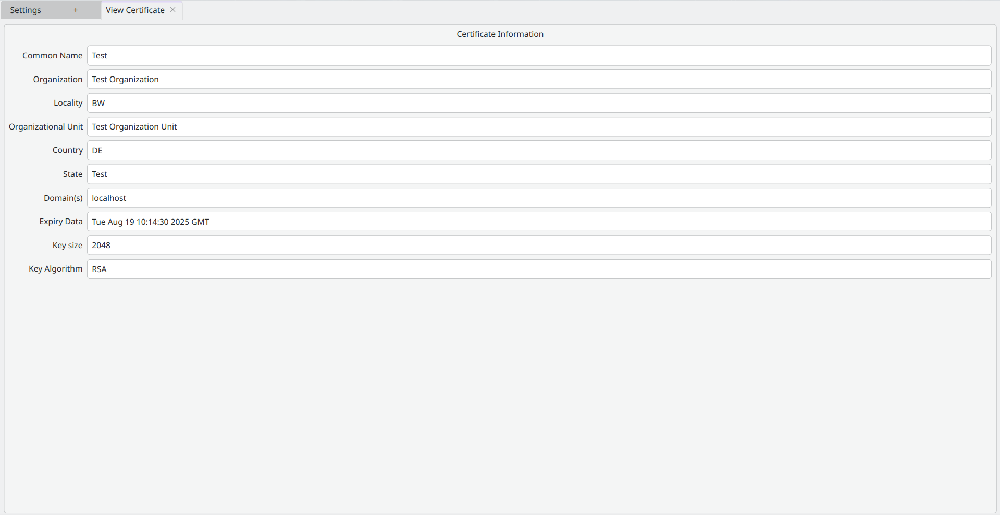

Extensible OPC UA Client
Magnesia • 20th April 2024
Extensible OPC UA Client
Live Presentation
GUI Overview
- Activities as Tabs
- Add Activity
- Settings
- DataViewer
- About
- DataViewer uses Panels

Activity Development
Settings Activity
- Edit Settings
- Manage Certificates and Keys
SettingsManager
- Settings grouped in Domains
- Domains defined by (Activity) developer
Define new Settings
Update Settings
Retrieve Settings
Reset Settings
Setting Types
- Bool
- String
- Int
- Double
- Enum
- HistoricServerConnection
- Certificate
- KeySetting
- ApplicationCertificate
- Layout
StorageManager
- Declared in StorageManager
- Defined in SQLStorageManager
- Migrations
Store Data
Retrieve Data
Retrieve All
Notice Change
- Cascade Deletion
- e.g. Certificate → ApplicationCertificate → HistoricServerConnection → HistoricServerConnectionSetting
Certificate Activity
- Create/View ApplicationCertificates
Create

View
DataViewer
Panel Development
TreeView

AttributeView

NodeView
ReferenceView
LogView
Router
- Open Activity without knowing it
URL Handler
Open URL
Build and Dependencies
- C++20
- CMake
- Dependencies in all major Linux Distros (including Debian)
- gcc 12.2.0 / clang 14.0.6 or newer
- cmake 3.25.0 or newer
- Qt 6.4.2 or newer
- open62541pp 0.13.0 (via CMake's FETCHCONTENT)
- Nix Flake
CI
- Implemented in Shell Scripts
- Runs locally
- Independent of GitLab
Development Process
- Conventional Commits
- Semi-linear History
Reviews
- Only push to main via GitLab MRs
- Extensive human reviews
- CI